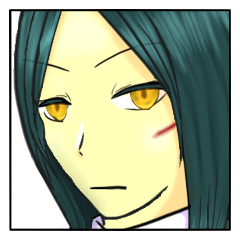
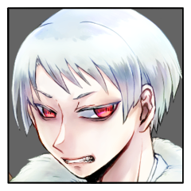

クライマックスフェイズ
GM
寄り添う男と女へと降り注ぐ、青く冴え冴えとした光の筋。
GM
荘厳なる場。
日の本の神を祀るために作られた堅牢なる祭壇。
百々坂 瞠
先にふたりが感じ取った、大いなるものの気配が。
静かに、しかし油断なく近づいてくる。

百々坂 瞠
傾きつつある月光よりもなお冴え冴えと冷たい、
異貌にして魔性の光とともに。
百々坂 瞠
そうして視認できる距離まで至れば、
そんなものがないかのように相好を微かに崩す。
葦原 名張
月光の下に現れた気配の主。百々坂 瞠の姿で。百々坂 瞠の声で。
俺たちに話しかける。
三榊 琴梨
違う。
目の前に現れた彼女は、もう、違う。
でも、ほんの少し和らげられた、琴梨によく向けられたその表情は――
三榊 琴梨
分かっているのに、つい、呼んでしまう。
百々坂 瞠
その呼び声に応じて、ついと視線を向ける。
百々坂 瞠
「きみがそう呼ぶのは好きにさせていたがね」
百々坂 瞠
「一度とて。
私がきみを妹と呼び返したことはあったか？」
百々坂 瞠
その言葉こそが、
決してあなたの前で見せることのなかった形の笑みこそが、
ここにもはや百々坂瞠のないことの証だ。
葦原 名張
その言葉に、態度は崩さないまま双眸を細める。
三榊 琴梨
冷や水を浴びせられたような。
息が止まるような心地。
三榊 琴梨
それは一瞬のこと。
存外に、その表情が崩れることはなかった。
先よりまっすぐ、視線は、瞠に。
三榊 琴梨
――今の言葉で、最後の決意が固まったように思う。
ゆえに、琴梨にとって百々坂 瞠は最後まで姉だったと思うのは、些か勝手だろうか。
三榊 琴梨
こんなにも、最後の最後まで、導いてくれているというのに。
百々坂 瞠
「きみも感覚ではわかっていたろうに。
ここにあるのはきみの慕った女ではない」
百々坂 瞠
呼び返さぬその名前は、いつか少女の前から消える女の最後の一線であった。
そう定めた女はもうこの場になく、
その姿をしたものだけがここにある。
百々坂 瞠
所持している、未公開の『神器』の秘密を名張さんへ譲渡し、公開とします。
【秘密：生弓矢】
このプライズ『神器』の本当の名前は『生弓矢』だ。
このプライズは封印されているかぎり、戦果で奪うことはできない。
このプライズの封印が解かれたとき、このプライズが封印されていた者の使命は封印を解いた者の使命に書き換えられる。その際、このプライズが封印されていた者は、所持するすべての感情属性を再度決定し直す。
このプライズを所持（封印されている状態を除く）しているものは、クライマックスフェイズ、毎ラウンドに一度、遁甲符として使用できる。（使用してもこのプライズはなくならない）
百々坂 瞠
「神器『生弓矢』が器だ。
『生大刀』の器よ」
百々坂 瞠
矢の如く鋭い舌鋒を、
徒に振るうことを楽しむ悪癖を受け継いだものが。
三榊 琴梨
「わたくしは『姫君』として、ここに居ます」
三榊 琴梨
「命の限り『八千矛』を支え、共に日の本の泰平を担う、『姫君』として」
三榊 琴梨
凛とした声、その姿は、器に収まるものではなく。
『八千矛』の横に立つ、『姫君』のそれ。
葦原 名張
「そういうことだ。俺としても、もはや百々坂サンではないアンタなら気兼ねねぇ」
葦原 名張
「そして『八千矛』として『姫君』から神器『生太刀』を拝領し、『八十神』を討ち倒すことをもって儀式を完了させる」
葦原 名張
ゆっくりとした動作で背負う大太刀に手をかける。
葦原 名張
引き結ばれた口と大柄な体から、役目を果たさんと圧を放つ。
百々坂 瞠
「そうか、そうか。
貴殿らが役目に殉ずるならばそれでこそ、
私のなすべきことは確固たるものとなる」
百々坂 瞠
「私は貴殿らと違い役なきもの。
なれどそれこそが儀を覆す具ともなろう。
人が道具となれること、貴殿らは何より知っていよう？
『八千矛』よ、『姫君』よ」
百々坂 瞠
「我が身はひとつ叛逆の嚆矢となろう。
この日の夜明けを――」
爾甁粢 野葛
「――黙れ。
誰が、そいつらを挑発しろと言った。」
爾甁粢 野葛
さながら、夜の闇を裂くかの如く。
祭壇に集う者たちの会話に、嘴が挟まれる。
爾甁粢 野葛
――正しく、それはもう一つの神器の気配。
百々坂 瞠
その声がいずこかより聞こえ来れば、
朗々と語られていた言葉はぴたりと断ち切られた。
爾甁粢 野葛
「…だが、この夜こそが叛逆の嚆矢となることは間違いではない。」
爾甁粢 野葛
「徒に尊厳を嬲られながら、ただ生きる事のみを許され……」
爾甁粢 野葛
「闘争の牙を失い、血を取り込むことすらも不能となってなお
箱の中で飼い慣らされた蚕のごとく、従順に生贄の糸を吐かされ続けてきた。」
爾甁粢 野葛
「その屈辱も――これで、終わりだ。」
爾甁粢 野葛
青白き月の光の下、祭壇に白き異形の姿が照らし出されて。
その背から、銀色の羽が千切れて地に落ちた。
爾甁粢 野葛
「もはや、飛び立てぬ羽に用は無い。」
爾甁粢 野葛
「仮初の羽を捨てる時が来た。
儀式の果てに里を解放し……今宵を境に、我らは外界へと飛び立つ。」
爾甁粢 野葛
ジリと歩を進めて。
百々坂の僅か後方に立てば、その顔を『姫君』に向ける。
爾甁粢 野葛
「気丈な『姫君』よ。
本当に迷いは無いのか？」
爾甁粢 野葛
「お前がこの場で『八千矛』から神器を取り上げ、今すぐ舞台から降りるのならば……」
爾甁粢 野葛
「双方とも一つの傷を負うことも無く、この女と共に儀式から離れることを許そう。」
爾甁粢 野葛
「無論、俺は『神器』を手放すつもりは無い。
ただお前だけが、『神器』を手にして去るのだ。」
三榊 琴梨
「それで、日の本の泰平は成せるのですか」
三榊 琴梨
「……それで、『お姉さま』は戻ってくるのですか」
三榊 琴梨
「わたくしは……『姫君』を、全うします」
三榊 琴梨
「あなた様がどれほど慈悲深くとも、それは理由になりません。
わたくしたちは、『八十神』を討たねばならないのです。絶対に」
爾甁粢 野葛
「……そうか。
この期に及べどなお…お前は、その気性を貫くと言うのか。」
爾甁粢 野葛
「よく分かった。
ならば、俺も容赦はしない。」
爾甁粢 野葛
歩を進め、百々坂の位置を越し…一人、前に立つ。
爾甁粢 野葛
「…俺を『八十神』と呼ぶな。
それは呪いの名だ。
儀式の敗者たるべき者に冠する、比良坂に定められた役割の名だ。」
爾甁粢 野葛
青白い月の光の下、
透き通るような白い肌の男が、祭壇に現れ出でる。
爾甁粢 野葛
「天をも恐れる荒神にして、知恵を以って化生を討つ英雄神。
堅洲の里を統べる真なる支配者である。」
爾甁粢 野葛
「我が里を荒らし尽くし、神器を盗み出す咎人。
『姫君』を誑かす好色たる『八千矛』よ。」

爾甁粢 野葛
「我が試練を以って、貴様を殺し尽くして見せよう。」
爾甁粢 野葛
深紅の双眸を以って、『八千矛』を射抜けば
次いで、隣に立つ『姫君』へと視線を送り。
爾甁粢 野葛
「宿命に弄ばれる『姫君』よ。
先に宣告した通り…俺が勝てば、お前の身柄は貰い受けることになる。」
爾甁粢 野葛
「お前が『八千矛』を信じ……
担う役割を全うし、その身を取り巻く世界を護り抜くと言うのなら――」
葦原 名張
「はぁ、なるほど……。『八十神』の話を聞くのはこれが初めてだが……」
葦原 名張
「こりゃあフラれるわけだ。俺にもわかる」
葦原 名張
「この期に及んでそんな言葉で舞台を降りるタイプじゃないなんて、最初に”お話”した時にわからなかったのか」
葦原 名張
「ウデはいいんだろうよ。ここまでのやりとりでもわかる」
葦原 名張
「いよいよ大詰めだってのに、よっぽど『姫君』を追いかけるのが大事か『八十神』よ」
爾甁粢 野葛
「……下らん挑発だ。
お前には『姫君』よりも、この女の方が余程似合いに見える。」
爾甁粢 野葛
「呑気も過ぎれば哀れなものだな。
何の余裕かは知らんが、随分とお前はこの祭壇が気に入ったようだ。」
爾甁粢 野葛
「それほど気に入ったと言うのなら、特別に住まわせてやるぞ。
この祭壇に、お前の首を高く高く括りつけてな。」
葦原 名張
「いやぁ、高いところは間に合ってる。もう十分高いところにあるんでな」
葦原 名張
「ところで『須佐之男』を名乗るってんなら止めゃしねぇが……」
葦原 名張
「そうなるとこの『葦原』に『生弓矢』も『生太刀』も、『姫君』も『琴』も持っていかれることにならねぇか？」
爾甁粢 野葛
「…その通りだ。
古書に描かれる物語のように…お前が無様に逃げまどい、幸運に縋り、ひたすらに逃げ続けるのならば。」
爾甁粢 野葛
「万に一つ程であれば、その可能性も見出せるかも知れないな。」
葦原 名張
「なに、古典通りにやるだけじゃあつまらんからな。過程はどうであれしまいが合ってりゃそれでいい」
爾甁粢 野葛
「そうか。
ならば、これより辻褄を合わせるとしよう。」
GM
男が二人。女が二人。
異界の月下を舞台に、ついに死合いの瞬間が訪れる。
クライマックスフェイズ ラウンド1
GM
アイコンの右にダイスを置いていただいて、
ついでにディスコード個人窓で申告をいただこうかな。
GM
プロットが完了したらメインでプロット完了の宣言をお願いします。
百々坂 瞠
プロット前忍法、【斎垣】を使用します。
百々坂 瞠
2D6>=5 （判定：罠術） (2D6>=5) ＞ 10[4,6] ＞ 10 ＞ 成功
GM
プロット５に斎垣が指定。
このプロットを宣言したキャラクターは１点の接近戦ダメージを受けます。
GM
ラウンド１のプロットオープン、お願いします！
[ 三榊 琴梨 ] がダイスシンボルを公開。出目は 4 です。
[ 爾甁粢 野葛 ] がダイスシンボルを公開。出目は 4 です。
[ 葦原 名張 ] がダイスシンボルを公開。出目は 6 です。
[ 百々坂 瞠 ] がダイスシンボルを公開。出目は 4 です。
GM
◆ラウンド１
プロット６：名張 ４：琴梨、野葛、瞠
GM
いいでしょう。コストとして生命力１点をお支払いですね。
判定をどうぞ。
[ 葦原 名張 ] 頑健 : 2 → 1
葦原 名張
2D6>=6 （判定：異形化） (2D6>=6) ＞ 12[6,6] ＞ 12 ＞ スペシャル(【生命力】1点か変調一つを回復)
GM
……消費してから判定の流れかな。これで１点回復が入ります。
爾甁粢 野葛
では神器の力を使用します。各ラウンド1回限定の遁甲符の力。
葦原 名張
2D6>=6 （判定：異形化） (2D6>=6) ＞ 6[3,3] ＞ 6 ＞ 成功
爾甁粢 野葛
その動きの先を遮るように、『八千矛』に向けて矢が放たれた。
爾甁粢 野葛
「……どうやら、この『神器』には因果を覆す力があるようだ。
果たして、必ずしも結末までも覆るとは限らないようだが……」
爾甁粢 野葛
「…罠を敷き、獲物の足を挫くは狩人の得手。」
爾甁粢 野葛
「そのニヤけた顔を、何度でも転がしてやろう。」
葦原 名張
2D6>=7 （判定：異形化） (2D6>=7) ＞ 10[4,6] ＞ 10 ＞ 成功
GM
成功ですね。
以降、名張の接近戦の攻撃忍法の間合いが＋１されます。
GM
まだ手番の行動は済んでいませんね。続けてどうぞ。
[ 葦原 名張 ] 頑健 : 1 → 0
葦原 名張
2D6>=7 （判定：異形化） (2D6>=7) ＞ 5[1,4] ＞ 5 ＞ 失敗
葦原 名張
ごく自然な、まるでそうあるのが当たり前かのように、背負った大太刀をぬるりと抜く。
葦原 名張
月光にぎらつく刃へと指を添え、血を捧げるように走らせる。
葦原 名張
完全に先手を取ったはずのその動きを見越したかのような狩人の一矢が頬をかすめる。
葦原 名張
次の一手から逃れるように、大きな体を後ろへと二転三転と弧を描いて身を躱す。
葦原 名張
持ち主の血を吸った大太刀は、元々長大な刃がさらに伸長したように血で覆われていた。
爾甁粢 野葛
「…意外に小回りの利く奴だ。
猪のような男と思ったが、鼬と呼ぶ方が相応しいかも知れんな。」
爾甁粢 野葛
「全くだ。そんな鼬が居るのなら、それは化生の類だろう。」
爾甁粢 野葛
「里を脅かす化物は退治せねばなるまいな。」
葦原 名張
「化生ねぇ。そこに関しちゃあまり否定できねぇなぁ。ま、退治奇譚なんて人間の御話だが」
GM
３人いるので、全員に1D100を振っていただきましょう。
目の低い順から行動を処理します。
爾甁粢 野葛
1D100 (1D100) ＞ 74
百々坂 瞠
2D6>=5 （判定：罠術）禁術 (2D6>=5) ＞ 9[3,6] ＞ 9 ＞ 成功
GM
畏まりました。
こちらの適用はプロット処理のタイミングと致します。
次の琴梨さんの行動の黄泉軍にはかかりません。
GM
手番の行動はまだ残っていますね、続けてどうぞ。
百々坂 瞠
■奥義
《闘術「百漣朧」》
指定特技 ：骨法術
エフェクト：範囲攻撃/撃ち+くらまし/人数制限+射程低下
効果・演出：ただ単純な格闘術。
柔軟で機敏な肉体によって高められ、漣の如く押し寄せる連続性と忍びの目にさえ追えぬ朧の速度を得て、それは奥義の域へ至った。
GM
了解しました。
二人は任意の分野３点にダメージを受けます。
GM
もうちょっと詳しく解説すると
任意の分野２点を減少＋撃ちによる射撃戦ダメージ１点 です。
コレガタダシイ。
三榊 琴梨
なるほど！！ありがとうございます！
少々お待ちください
GM
了解しました。
では名張さんと琴梨さんは喪失する分野３つの宣言をお願いします。
GM
宣言だけしてもらう感じで。
実際の喪失はプロット４の処理が終わるタイミングでまとめて行います。
GM
ではRPを頂きましょうか。よろしくお願いします！
百々坂 瞠
比良坂の術印を結んだ指が静かに解かれて。
それを合図に、忍びの音速にあったその身が一瞬のうちに白無垢へと肉薄する。
百々坂 瞠
正拳、膝、もう片腕をもって掌打。
流れるような動作で各部位を叩き込んで最後に一蹴。
それは技の数々を教え込んだ琴梨にすら一度も見せたことのない、自らの秘奥としての流れ。
百々坂 瞠
その勢いでもって血色の大刀を構えた偉丈夫へと俄に距離を詰め、
あの祭壇での一撃にも勝るとも劣らぬ手刀の連続を見舞う。
三榊 琴梨
――速い。
その身のこなしは琴梨の知る百々坂、いや、そのひと以上か。
反応が遅れる。致命打は防ぐが、それでも重い。
葦原 名張
術印から放たれるのは派手で強大な術の類ではなく、鍛錬と修練に裏打ちされた純粋な体術。
その速さだけでなく的確に急所を狙う正確性が練度となって現れる。
葦原 名張
体勢を崩していることを差し引いても初見で対応できるものではない。
葦原 名張
僅かな判断でより危険な攻撃のみを防ぐ。
するどい手刀は身を刻み、その刃を血に染めた。
爾甁粢 野葛
「…ふん。
腐っても比良坂か。大した体術だ。」
流れるような体技を眺めつ、そう呟く。
爾甁粢 野葛
「今のは悪くない働きだ。奴らの足が止まった。」
爾甁粢 野葛
■奥義
《燎原の試練》
指定特技 ：見敵術
エフェクト：範囲攻撃/撃ち・くらまし/人数限定・射程低下
爾甁粢 野葛
対象は琴梨さん、名張さんのお二人で。
GM
これも二人に任意の分野２点を減少＋撃ちによる射撃戦ダメージ１点ですね。
GM
了解しました。
こちらも奥義情報の開示をお願いします。
三榊 琴梨
■奥義
《祝詞『須勢理毘売命』》
指定特技 ：呪術
エフェクト：絶対防御／くらまし／防御低下
効果・演出：あなたを言祝ぐその言葉。
GM
では名張は残りの３点の生命力を失います。
こちらもプロット４データ処理のタイミングで行います。
爾甁粢 野葛
囲い込まれ、辱めを受ける日々の中にあっても……
我々は備えを怠ることは無かった。
爾甁粢 野葛
それも、50年や100年の話ではない。
僅かな物資を密かに蓄え、隠し続けながら……
爾甁粢 野葛
糸、木材、油や食料、家屋に埋まる土に至るまで――
爾甁粢 野葛
幾千年の時に渡り、その望みを繋ぎ続けて来た。
爾甁粢 野葛
「これよりお前たちが相対するのは、堅洲の里の"願い"そのもの。
殺戮を撒き散らす狼藉者どもを誅する、"呪い"と"希望"の力だ。」
爾甁粢 野葛
その弓を、己が後方に向けて。
タタンッと弦を弾く音が二つ。
淀み無い動きで、後背の地面に向けて矢を射ち込んだ。
爾甁粢 野葛
それと同時に、『八千矛』と『姫君』の四方から
粘る油を伴いながら、凄まじい勢いで火柱が噴き出した！
爾甁粢 野葛
「古書に曰く――
野に出た八千矛は須佐之男の放った火に囲まれ、危機に陥るも
鼠の助けを得て、迫る炎から逃げ果せたと言う。」
爾甁粢 野葛
「しかし、今やここは鼠一匹とて存在を許されぬ儀式の異界。
その身を助ける者など…存在しない。」
爾甁粢 野葛
天地を焼き焦がす業火が『八千矛』と『姫君』に迫り来る――
三榊 琴梨
火勢に隔たれる。
まじなう言葉が届かない。
届けたいのは、あなたなのに。
葦原 名張
放たれた矢から燃え上がる炎の向こうより響く『八千矛』の声。
三榊 琴梨
聞こえたのは、『八千矛』のそれ。
ぐ、と気を引き締め直す。
信じると決めたのは誰だ。
葦原 名張
琴梨へと放った言葉は、しかしこのままではただの強がりに過ぎない。
燃える炎は体から流れる血をより紅く朱く染めてゆく。
葦原 名張
舌打ち。
右手をそのまま己の懐へと差し込み――
爾甁粢 野葛
「今この時に至るまで、
俺が祭壇に近付こうとしなかった理由を考えるべきだったな。」
爾甁粢 野葛
「この場所は、お前を焼き滅ぼすための死地だ。
いかに逃げ回ろうと、俺の目から逃げ果せるなど出来はしない。」
GM
黄泉軍への禁術はまだ発動していないものとします。
GM
入れても４でファンブルではありますが、判定をどうぞ。
三榊 琴梨
2D6+1>=5 （判定：傀儡の術） (2D6+1>=5) ＞ 5[1,4]+1 ＞ 6 ＞ 成功
百々坂 瞠
感情修正は…ないかな 回避を振りますね。
百々坂 瞠
2D6>=7 （判定：遊芸） (2D6>=7) ＞ 10[5,5] ＞ 10 ＞ 成功
百々坂 瞠
微かに弧を描いた口元は、向けられた賛辞に応じたようだった。
それがどちらのものへなのかなど考える前に、
閃光と劫火がその姿を隠し。
百々坂 瞠
その影は視界を埋め尽くす紅の中を、
恐れもなく舞うように縫ってゆく。
三榊 琴梨
赤に紛れるその姿から、どんどん面影が薄れてゆく。
『生弓矢』の器を追えない――ならば。
三榊 琴梨
2D6-1>=5 （判定：罠術） (2D6-1>=5) ＞ 4[1,3]-1 ＞ 3 ＞ 失敗
三榊 琴梨
火が、牙を向く。
まるで地獄のような業火。
巡らせる呪いも、掻き消される。
爾甁粢 野葛
「炎に追い立てられてもなお、立ち続けるつもりか……」
三榊 琴梨
熱が肌を裂く。喉が焼ける。黒煙が灰を侵す。
それでもなお、折れることなく立っている。
爾甁粢 野葛
「だが、『姫君』よ。
この女の拳を受けて、お前の動きが精彩を欠いたぞ。
迷いが生じたのならば…すぐにでも舞台を降りて構わないぞ？ 大きな怪我を負わぬ内にな。」
三榊 琴梨
「わたくしは『姫君』の御役目を全うする、と」
爾甁粢 野葛
「…相変わらず、温情を理解できない娘だ。
ならば、俺も手を緩めるつもりは無い。」
[ 三榊 琴梨 ] 器術 : 1 → 0
[ 三榊 琴梨 ] 忍術 : 1 → 0
[ 三榊 琴梨 ] 戦術 : 1 → 0
葦原 名張
＊喪失前に兵糧丸を使用して頑健分の生命力を回復します
[ 葦原 名張 ] 頑健 : 0 → 1
GM
では頑健の生命力１点と、忍術、戦術、謀術と、あと２分野ですね。
[ 葦原 名張 ] 頑健 : 1 → 0
[ 葦原 名張 ] 器術 : 1 → 0
[ 葦原 名張 ] 忍術 : 1 → 0
[ 葦原 名張 ] 謀術 : 1 → 0
[ 葦原 名張 ] 戦術 : 1 → 0
[ 葦原 名張 ] 妖術 : 1 → 0
[ 葦原 名張 ] 忍具 : 2 → 1
葦原 名張
■奥義
《魔血《血装鬼》》
指定特技 ：仕込み
エフェクト：不死身/目覚め/回数制限
葦原 名張
1d6-1 (1D6-1) ＞ 1[1]-1 ＞ 0
GM
……回復量はゼロですね。目覚めの発動もありません。
葦原 名張
術により展開された炎のその向こうに、赤黒い塊がうずくまっている。
葦原 名張
まるで体表を血が覆い、そしてその鉄を炎が焦がしつくしたかのようなそれは。
葦原 名張
その肌はまるでおとぎ話に出てくる鬼のように赤い。
葦原 名張
額は角のように隆起し化生と言うべき異形の姿をとる。
葦原 名張
「ぶっつけで使うものではないなぁ、これは」
爾甁粢 野葛
「…幾千年の時を経て、この里に本物の"鬼"が降り立つことになるとはな。」
爾甁粢 野葛
「その様に身体が赤くては、どれだけ血が流れ出たかも把握が難しいな。
幾十も矢を射かけた後、骨の一つまで丹念に焼き焼き滅ぼしてくれよう。」
爾甁粢 野葛
聳え立つ赤い巨体から距離を取り、再び地を蹴って駆け出す。
GM
これにてラウンド１は終了。
ラウンド終末に使われる忍法などはありませんね。
クライマックスフェイズ ラウンド2
百々坂 瞠
2D6>=5 （判定：罠術）斎垣 (2D6>=5) ＞ 5[1,4] ＞ 5 ＞ 成功
[ 葦原 名張 ] がダイスシンボルを公開。出目は 5 です。
[ 爾甁粢 野葛 ] がダイスシンボルを公開。出目は 5 です。
[ 百々坂 瞠 ] がダイスシンボルを公開。出目は 3 です。
[ 三榊 琴梨 ] がダイスシンボルを公開。出目は 3 です。
GM
◆ラウンド２
プロット５：名張、野葛 ２：琴梨、瞠
爾甁粢 野葛
1D100 (1D100) ＞ 76
爾甁粢 野葛
では、奥義を使用します。
対象は名張さんと、琴梨さんに
爾甁粢 野葛
■奥義
《燎原の試練》
指定特技 ：見敵術
エフェクト：範囲攻撃/撃ち・くらまし/人数限定・射程低下
GM
了解しました。
奥義破りは見敵術から-2です。
[ 葦原 名張 ] 忍具 : 1 → 0
[ 葦原 名張 ] 戦術 : 0 → 1
GM
はい、ではくらましと合わせて-2+1をつけて判定をどうぞ。
葦原 名張
2D6-2+1>=6 （判定：暗号術） (2D6-2+1>=6) ＞ 9[3,6]-2+1 ＞ 8 ＞ 成功
三榊 琴梨
赤、赤、赤。
その中に見えた赤はまた、別の。
三榊 琴梨
微かに、笑み。
それはきっと、どんなまじないよりも。
爾甁粢 野葛
弦を振り絞った弓を天に向けて、放ったのは四矢。
飛び去った矢は僅かの時を置いて二矢、続けて二矢が地に向かう。
バラバラに飛び去った矢を阻むことなど、容易なことでは無い筈であったが。
葦原 名張
黄色く光る瞳は炎の壁のその向こう、翻る白い華を見つける。
葦原 名張
そしてそのまま天高く放たれる矢へと向けられ。
葦原 名張
ずらり、血を纏った大太刀がその切っ先を幾倍の長さにも伸ばして空に一閃を描く。
爾甁粢 野葛
「…粗暴な動きだ。
まさに獣そのものと言った方が相応しいな。」
爾甁粢 野葛
「良いだろう。次はより繊細な技をくれてやる。
お前の大き過ぎる手には余るような物をな。」
葦原 名張
■奥義
《魔血《血装鬼》》
指定特技 ：仕込み
エフェクト：不死身/目覚め/回数制限
GM
了解です。
奥義破りの指定特技は仕込みですね。
葦原 名張
1d6-2 (1D6-2) ＞ 1[1]-2 ＞ -1
GM
……回復量はゼロで、目覚めの発動もありませんね。
葦原 名張
2D6>=5 （判定：骨法術） (2D6>=5) ＞ 10[4,6] ＞ 10 ＞ 成功
GM
このままもう一回、任意の特技での判定をどうぞ。
葦原 名張
2D6>=5 （判定：砲術） (2D6>=5) ＞ 5[2,3] ＞ 5 ＞ 成功
葦原 名張
2D6>=5 （判定：砲術） (2D6>=5) ＞ 9[3,6] ＞ 9 ＞ 成功
百々坂 瞠
2D6>=5 （判定：砲術） (2D6>=5) ＞ 8[4,4] ＞ 8 ＞ 成功
葦原 名張
大太刀を握る手に力を込める。
儀式に向けて鍛えたその力を振るう先を求め。
葦原 名張
その刃を、目の前の『八十神』ではなく炎の壁のその向こうへと振るう。
葦原 名張
すぐさま振るう二刀目の切っ先は、矢を落としたときのようにより長く。
百々坂 瞠
煙よりなお高く立ち上り明け前の空を薙いだ摩天の刀を、もう一対の輝く双眸は見上げ。
百々坂 瞠
下ろされたその袂へ向けられた視線が、もう一つの黄金とかち合う。
音よりも早く、その光で意図を理解し。
百々坂 瞠
即座に抜かれた焔に鈍く光る黒鉄が立てる間髪すら挟めぬ号砲の、着弾とともに轟音。
隠されたいくつもの油溜めが爆発とともに煙を上げ、女の姿はその中へ消える。
百々坂 瞠
閃光と煙の中で辛くも事なきを得て、黄金はまだ追っている。
戦場を隔てる赤熱よりもなお赫き鬼の行方を。
葦原 名張
その動きを踊る炎のその向こうから垣間見る。
三榊 琴梨
2D6-1>=5 （判定：罠術） (2D6-1>=5) ＞ 6[1,5]-1 ＞ 5 ＞ 成功
爾甁粢 野葛
2D6>=5 （判定：調査術） (2D6>=5) ＞ 10[4,6] ＞ 10 ＞ 成功
三榊 琴梨
演出は後ほどまとめて。
百々坂さんに接近戦攻撃。
三榊 琴梨
2D6>=5 （判定：骨法術） (2D6>=5) ＞ 5[2,3] ＞ 5 ＞ 成功
百々坂 瞠
2D6>=5 （判定：骨法術） (2D6>=5) ＞ 8[4,4] ＞ 8 ＞ 成功
GM
こちらも回避成功ですね。琴梨さんからRPをどうぞ。
三榊 琴梨
黒い風のように女は戦地を駆け、黒煙と共に消えた。
その身のこなしはもはや記憶にあるものと遠いものだ。
三榊 琴梨
けれどきっと、追っている、自分ではなくてあの赫を。
百々坂の先、名張の前に、行かせまいと立ち塞がる。
百々坂 瞠
轟音の先、黒煙の中。
その中に紛れた黒髪と黒衣を、琴梨は違わず見つけることができる。
百々坂 瞠
己の行く先へ飛び込み、行く手を遮る姿に目を細める。
勢いのままでなど突破させてはくれないと、その立ち姿でさえ理解できる。
百々坂 瞠
■奥義
《闘術「百漣朧」》
指定特技 ：骨法術
エフェクト：範囲攻撃/撃ち+くらまし/人数制限+射程低下
効果・演出：ただ単純な格闘術。
柔軟で機敏な肉体によって高められ、漣の如く押し寄せる連続性と忍びの目にさえ追えぬ朧の速度を得て、それは奥義の域へ至った。
GM
OK。奥義破りは骨法術からくらましと沈黙で-3。
GM
琴梨→名張の感情修正は既に使われていますね。
逆はまだ。
葦原 名張
2D6>=8 （判定：骨法術） (2D6>=8) ＞ 4[1,3] ＞ 4 ＞ 失敗
三榊 琴梨
奥義破りします。
名張さんから感情修正を頂きたく。
三榊 琴梨
2D6-3+1>=5 （判定：骨法術） (2D6-3+1>=5) ＞ 9[4,5]-3+1 ＞ 7 ＞ 成功
GM
では振り直しをどうぞ。修正値はそのままです。
三榊 琴梨
2D6-3+1>=5 （判定：骨法術） (2D6-3+1>=5) ＞ 4[2,2]-3+1 ＞ 2 ＞ 失敗
[ 三榊 琴梨 ] 忍具 : 2 → 1
三榊 琴梨
2D6-3+1>=5 （判定：骨法術） (2D6-3+1>=5) ＞ 9[4,5]-3+1 ＞ 7 ＞ 成功
百々坂 瞠
力量差での一蹴などできはしない。
そう見るや金の瞳が、素早く目前の相手を睥睨する。
その構えに、呼吸に生じる僅かな隙を探し、
百々坂 瞠
そうして、飛び込む。
突破しての向こう側、その焔までも断ち切るような目論見で。
しかし。
三榊 琴梨
ぴたり、と息の合った組み手のような動きだった。
地に足を据え、半身を捻じり、その勢いを止める手が差し出されたのは。
三榊 琴梨
「わたくしが立っている限り、『八千矛』にはもう触れさせません！」
百々坂 瞠
目の前に現れたたおやかな手指は、その実、印象とは全く真逆のものを秘めていた。
その動作一つで、それを過ぎ越してすぐさま背に伸びる追撃さえ思い描くことができる。
百々坂 瞠
真っ直ぐに行く手ばかりを見ていた視線が、ついとその持ち主へと逸れ。
瞬間、重心とともに加速度を後方へ。そのまま手をついて転回し距離を取る。
百々坂 瞠
「……ああ。
『命果てるまでも』彼を支えると。きみは誓ったのだったな、『姫君』よ」
三榊 琴梨
深追いはしない。できない、というのが正しい。
迂闊に踏み込めば、返り討ちに遭うのはこちらだ。
それほどの相手であることを知っている。
三榊 琴梨
今は、まだ。
意志の強い、射干玉の瞳は、次の機を見据えている。
三榊 琴梨
「ええ。それこそが、わたくしの御役目」
百々坂 瞠
「果たさせるわけには――と、言いたいところだがね。
私ときみの望みの交錯点が一つだけある」
百々坂 瞠
「命が果てれば終わるのだろう？
きみか、『八千矛』か、いずれかの」
三榊 琴梨
「かの『八千矛』でも、死んでしまえば御役目を果たすことは叶わないでしょう」
三榊 琴梨
ちくりとした痛み。
中身はとうに、かつて慕った彼女ではない。理解している。割り切ってもいる。
それでも、その姿をした相手に言うのはどうしても、少し辛い。
奮い立てるように。
三榊 琴梨
「それはあなた様方にも言えることです」
爾甁粢 野葛
「…『神器』め、口を動かせと命じた覚えは無いぞ。」
爾甁粢 野葛
「余計を喋る前に、戦いに集中しろ。」
三榊 琴梨
「あら、わたくしもあなた様のお言葉は聞きたくありませんわ」
三榊 琴梨
「……それに、こちらに口を挟んでいてよろしくて？」
爾甁粢 野葛
「……ふん。
口が減らないのは、お前も同じか……」
百々坂 瞠
何事か開きかけた口を、割り入る声に応じて噤んだ。
『姫君』の返答にか、それとも彼女と『須佐之男』との言い争いにか、唇の輪郭だけが弧を描く。
爾甁粢 野葛
「ならば、今のうちに耳を慣らしておけ。
この図体ばかりの男が動かなくなるのも、直ぐの事だ。」
葦原 名張
「『八十神』はよほど”おなご”とお話したいらしいなぁ」
三榊 琴梨
「もしそんなことが起こるなら、わたくしは耳を引き千切ってみせましょう」
爾甁粢 野葛
「…悪いが、長く狩りを続けても
ついぞ獣と言葉を交わす方法は知り得なかったのでな。
当然こうも成ろうと言うものだ。」
爾甁粢 野葛
「そして『姫君』も……随分と幼稚な宣言をするものだ。
先に言ってしまえば、阻止することも造作も無いというのに。」
爾甁粢 野葛
「お前たち二人…どちらも直情に過ぎる。
耐え忍ぶことを知らぬ者たちに、俺が負けることなどありはしない。」
GM
ではプロット３の処理が終了し、ラウンド２が終了。
ラウンド終末忍法などもなし。
クライマックスフェイズ ラウンド2
百々坂 瞠
2D6>=5 （判定：罠術）斎垣 (2D6>=5) ＞ 7[1,6] ＞ 7 ＞ 成功
GM
ラウンド３のプロットオープン、よろしくお願いします！
[ 爾甁粢 野葛 ] がダイスシンボルを公開。出目は 4 です。
[ 葦原 名張 ] がダイスシンボルを公開。出目は 2 です。
[ 百々坂 瞠 ] がダイスシンボルを公開。出目は 4 です。
[ 三榊 琴梨 ] がダイスシンボルを公開。出目は 2 です。
GM
◆ラウンド３
プロット４：野葛、瞠 ２：名張、琴梨
爾甁粢 野葛
1D1000 (1D1000) ＞ 539
爾甁粢 野葛
1D100 (1D100) ＞ 97
葦原 名張
2D6>=8 （判定：骨法術） (2D6>=8) ＞ 4[1,3] ＞ 4 ＞ 失敗
三榊 琴梨
奥義破りします。
名張さんから感情修正を頂きたく。
三榊 琴梨
2D6-3>=5 （判定：骨法術） (2D6-3>=5) ＞ 4[1,3]-3 ＞ 1 ＞ 失敗
GM
はい。奥義破りは呪術からくらましで-2ですね。
爾甁粢 野葛
奥義を破ります。
そして判定に回想シーンを使います。
GM
はい、では秘密を開示して回想シーンをどうぞ。
百々坂 瞠
割り込みますが先に、奥義破りへの感情修正+1を宣言させてください。
GM
はい、感情修正了解です。
改めて回想シーンの演出をお願いします。
爾甁粢 野葛
【秘密：爾甁粢 野葛】
数千年にも及ぶ屈辱の末、ついに綻びが起きる。儀式に使用され消滅するはずだった祭具『羽喫鳴鏑』を先代の八十神によってどうにか残され、今はあなたの手元にある。今回の異常はそれによって引き起こされたものだろう。このまたとない機会を無駄にするわけにはいかない。
あなたはプライズ・祭具『羽喫鳴鏑』を持つ。
爾甁粢 野葛
我々は、とうの昔に自分達が阿呆だと知っていた。
爾甁粢 野葛
力を盲信した結果が、天の川の如く途方もない敗北の歴史を作った。
爾甁粢 野葛
優良なる血の結晶は50年ごとに間引きされ、薄められた血が細々と残されるのみ。
爾甁粢 野葛
如何なる勝ち方をするか、が問題なのだ。
爾甁粢 野葛
ただ儀式で勝ち名乗りを上げ、力を誇れば良いというものではない。
幾千年にも渡り闇の奥底に隠されて来た我らの声など、世に響くはずも無い。
爾甁粢 野葛
勝者たることを示すには"権威"を必要とする。
爾甁粢 野葛
八千矛を打ち倒した上で、
我らこそが新たな世の支配者に相応しき存在であると示さなければならない。
爾甁粢 野葛
儀式の作法に則り、儀式を乗っ取ることで、勝者たる我々こそが新たなる国主神であると知らしめす。
まつろわぬ国の始まりには、須勢理毘売たる役目の者を正妻として迎えることが不可欠だ。
爾甁粢 野葛
そのために、箱庭の『姫君』を……
堅洲の里の民と同じように――ただ儀式の成就のために生かされて来た娘を、贄とすることとなっても――
我らが負い続けた苦悶を、この哀れな白い花に与え続けることになったとしても……
爾甁粢 野葛
「…才という才を殺し尽くされて来た我らだ。
この手で作り出す世は……間違いなく、容易ならざる物となるだろう。」
爾甁粢 野葛
「恨み、呪い、怒りを見せてみるが良い。」
爾甁粢 野葛
「あらゆる辛苦に耐え抜いた我らの里だ。
いかなる阻害があろうと、膝を屈することは無い。」
爾甁粢 野葛
「必ずや、儀式の要となる八千矛を排除し…大国主たる地位を奪い取る。
我らが世に飛び立つために、必要なことはそれだけだ。」
爾甁粢 野葛
「比良坂より齎され、里を縛り続けて来た宿怨の縄を――
今こそ『神器』を以って打ち破り、引き裂く時だ！」
GM
では都合-2+3+1-1をつけ、呪術での判定をどうぞ。
爾甁粢 野葛
2D6-2+3+1>=6 （判定：憑依術） (2D6-2+3+1>=6) ＞ 12[6,6]-2+3+1 ＞ 14 ＞ スペシャル(【生命力】1点か変調一つを回復)
GM
琴梨の奥義は破られ、無効となります。
名張と琴梨に3点の任意分野喪失が入ります。
GM
生命力喪失はプロット４の同時攻撃処理後のタイミングになるので、先にRPをしましょう。
百々坂 瞠
吼え猛る主の声に応ずるは、まさに名を呼ばわれた『神器』。
この場にあるはずもなき、儀典と伝承の例外者。
百々坂 瞠
あるいはもはや、それを奪われた空の器。
その空虚になみなみと怨嗟と怒りとを注がれて、人ならぬ色の目をぎらつかせて笑うその姿は、狩人の忠実なる猟犬。
百々坂 瞠
その姿が、いま一度月光の下で疾駆する。
言葉でもって確かに露わにした殺意を、体現するものとなる。
葦原 名張
月夜に響く獣声とともにもはや人ではなくなった殺意がこちらへと向かってくる。
葦原 名張
合図も声も、身動きさえも許さない疾走。
三榊 琴梨
否、黒煙に塗れた白無垢はもはや煤け、汚れ切っている。
顔を覆う薄布が、はらりと落ちた。
三榊 琴梨
赤と黒の間に割って入る。
ただそれだけしかできなかった。
自分を、護ることすらも。
三榊 琴梨
でも、動いてしまった。
心が、身体が、あなたを護りたい、と。
『姫君』ではなく、『三榊 琴梨』が、
三榊 琴梨
胸から赤々と血を流して。
それでも、『葦原 名張』を見つめる眦は下げられ、口元は弧を描いている。
葦原 名張
眼前に迫る殺意に横から飛び込む白は一人しかいない。
葦原 名張
名張の目は美しい姫君を捉える。そしてその向こうから迫るものにも。
爾甁粢 野葛
「……その動き。
先ほど『神器』の乱打を防いだ術か。
二度目はやらせん。」
爾甁粢 野葛
弦を弾き、動きを遮らんと弓を放った。
かくして赤き鬼は倒されて、青白き月光が照らすのは白衣の姫君のみ――
爾甁粢 野葛
「――待て、『神器』！ 動きを止めろ！」
爾甁粢 野葛
見立てでは、僅かに息を止めるに至らぬはずであった。
『姫君』がなおも食い下がり…生き延びようと足掻くのならば。
堅洲の里の如く――その爪痕を遺さんと、生をにしがみ付くのであれば…未だ死なぬ筈の傷が。
爾甁粢 野葛
――今まさに、その命に届かんとしていた。
百々坂 瞠
割り入る白は先も目にした光景。
違いは、まるでその体勢の整っていないこと。
此度は力のみで押し切るに、何の支障もない。
百々坂 瞠
だが人ひとりとの激突の衝撃に、何の影響も受けぬはずもない。
速度を減じたその瞬間に目に映るのは、炎と煙の中に翻る純白のベール。
百々坂 瞠
その奥のかんばせを目にしたことなど、この女とてありはしなかった。
比良坂機関の者として知らぬはずもないその矜持を損ねる理由は、これまでひとつも。
百々坂 瞠
だが、だからこそ知っている。
隠された面差しを目の当たりにしたものの末路を。
百々坂 瞠
「――ハ、ハ、ハ。
ハハハハハハ！！！」
百々坂 瞠
その貌を目にしたものを殺す？
できるものか。
百々坂 瞠
殺すのは。
殺さねばならないのは此方だ。
百々坂 瞠
この『姫君』を殺さねば、『八千矛』になど届かない。
この子がそうすると誓ったならばそれを決して違えぬことを、
誰よりも知っている。
百々坂 瞠
それを悟れば片脚をその場へ。
そこを支点に、これまで載せてきた加速のすべてを回転運動へ変える。
上がったもう片方の脚にて、蹴撃。硬い靴底が、
百々坂 瞠
露わになった、その顔面へと違わずに吸い込まれる。
百々坂 瞠
叫びが耳に入るはその刹那。
体重を大きく預けたその体勢のままで、望まれた通りに静止して。
百々坂 瞠
顔だけが不服そうに、主たる白へ向けられる。
三榊 琴梨
その渾身の、彼女の研鑽した体術を煮詰めたような蹴撃を、今の琴梨に受け止めることなどできはしなかった。
三榊 琴梨
鈍い音。
為されるがまま、小さな身体が地に倒れ伏す。
三榊 琴梨
真白い服も、雪のような肌も、血と汚泥と煤に塗れている。
三榊 琴梨
微かな声だけが、譫言のようにあなたを呼んでいる。
葦原 名張
百々坂 瞠の技は夥しい殺意を伴った奔流となり、それは琴梨のみに向けられたものではない。
葦原 名張
身を挺して俺を庇う琴梨に放たれた致命の攻撃はまた、俺自身にも及んでいる。
葦原 名張
琴梨が倒れ伏すのと己の鮮血が吹き上がるのはほぼ同時。
葦原 名張
視界が傾く。
首をかしげているのではなく体を支えるだけの力が残っていない。
葦原 名張
膝をつく。
月が出た夜のはずが、夜明けが近いはずが、周囲の明度が落ちていく。
大きな鐘を耳元で鳴らされているかのように音が廻る。
葦原 名張
それでも、俺の名を呼ぶ琴梨の声だけは聞こえる。
葦原 名張
その声を頼りに、汚れ切った白無垢の、約束と覚悟を共にした花嫁を赤濡れた手ですくい、抱き上げる。
爾甁粢 野葛
「馬鹿な……
誰が命まで奪えと言った！！
加減も知らないのか！！」
爾甁粢 野葛
瞬く間に鮮血に染まる、黒と白の衣を眺めながらも…
今や、どうすることも出来ず。
目を見開いて、驚きに立ち尽くすばかり。
百々坂 瞠
伏して動かぬ『姫君』を『八千矛』が求めるとみれば、その脚を除けて身を明け渡す。
どのみち助かりはしまい。
命を幾度も永らえる術持つものなど、伝承の祖より幾千年を経たこの場に力を貸しはしない。
百々坂 瞠
そのまま驚愕を隠しもせぬ主へ、なんでもないように口を開く。
爾甁粢 野葛
「――だからと言って、死なれてはどうにもならんだろうが！
もはや勝負は付いた！
せめて奴らの命だけは繋ぎ止めろ！」
爾甁粢 野葛
呆けた言葉を吐く『神器』に命じると共に、駆け寄ろうと。
GM
プロット４の処理を行います。
琴梨、野葛は３点の任意分野を喪失、生命力０点に至ります。
GM
それぞれ脱落、死亡と選べますが、いかがいたしますか。
GM
了解しました。
死亡攻撃、もしくは遺言と選べます。いかがいたしますか？
百々坂 瞠
下された命に、目前の忍び達を見下ろす。
紅白の肌に、一様に血と泥と煤とを纏わりつかせた死に体の姿を。
葦原 名張
俺と琴梨から流れる血が交じり合い血河となって地を這う。
葦原 名張
流れ出る命はとどまることなく堅州の里へと染み込んでゆく。
葦原 名張
暗い視界のその向こうで『八十神』と『神器』が何か言葉を交わしている。
死の淵にある俺の耳に届くのは、どちらのものともわからなくなった琴梨の鼓動と絞り出される声のみ。
葦原 名張
「……ちょっと、行先が変わりそうだな」
三榊 琴梨
寒かった。
張り詰めた空気も、怨みが積もったこの地も、流れる血も、すべて冷たかった。
三榊 琴梨
温かかった。
あなたが抱き留めてくれたから。
大きな熱い手も、聞こえる鼓動も、血潮さえも、琴梨を安心させた。
すべてあなたのものだから。
三榊 琴梨
赤と黒に塗れた、小さな手が添えられる。
葦原 名張
添えられた小さな手を武骨な手が握り返す。
葦原 名張
俺とならどこへでもと。
腕の中の小さな温もりは、その温もりを失いつつある琴梨は、そう言ってくれる。
葦原 名張
ほんのわずか。
ほんのわずか頭によぎる。
葦原 名張
『役目を果たす』という、代々続く呪い。
葦原 名張
完璧には果たせずともこの二人の命が尽きるまでの最後のほんの一瞬までを使えば、少なくとも『八十神』を―――。
三榊 琴梨
神器を授かって生まれた故に生家から引きはがされ、醜女衆に預けられて存在を隠匿され、琴梨はずっと『姫君』という名の籠の中の鳥として生きてきた。
あったのは役目だけ。
三榊 琴梨
その、誇りであり心の拠り所だった役目ももう果たせない。
唯一の、気を許せる姉すらもういない。
三榊 琴梨
琴梨は微笑んでいる。
最後の最後、ふたりでと言ってくれた、あなたのために。
あなただけに見てもらうために。
綺麗に、笑っている。
葦原 名張
俺の耳には最初で最期のの『おねがい』が流れこむ。
葦原 名張
『お前など、名ばかりが有名な張子の虎だ』
葦原 名張
親父の言葉をぼんやりと思い出す。
思えば親父は、儀式の役目もなくただ後継ぎをつくり、育て、何一つ自由も得られない立場。
そんな親父が『八千矛』の担い手となった俺に当たることは珍しくなかった。
葦原 名張
時に『八千矛』たる振る舞いのためにと口を出し。
時に外のことも知っておけと高校を卒業させ。
その実、親父は壊れていた。
葦原 名張
儀式に殉じることも、すべてに歯向かって投げ出すこともできず。
葦原 名張
そして俺は、その役目に没頭することが親人のためになると思っていた。
葦原 名張
だから俺にとっては『八千矛』がすべてであり、役目を果たし儀式を成功させることが当たり前であり。
そしてことが終われば、次の担い手に向けて子をつくる。
葦原 名張
そしてその実、儀式の仕組みは俺が知っているよりもはるかに醜悪で合理的で完全にシステムとなっていて。
葦原 名張
言いつけをまもりしきたりに囚われ何一つ自由なく籠に囚われてきたはずの琴梨は。
しかし、自分の夢を語ることを恐れなかった。
葦原 名張
だから、そんな琴梨のために。
世界を救おうと思った。
葦原 名張
そう言って精いっぱい、葦原 名張としての笑顔を見せる。
これは俺と琴梨の約束だ。
三榊 琴梨
スターバックスも、映画館も、服屋も、夏の海も、冬の山もない。
きっと、ここよりもずっと暗い昏い場所だけれど。
三榊 琴梨
名張様は、一緒にいてくれる。
役目を果たせない『姫君』なのに。
それでも一緒にいてくれる。
三榊 琴梨
――精一杯、笑ってみせて。
そして、事切れる。
あなたの胸の中で、ひどく、安心したように。
葦原 名張
ふたりの旅路を邪魔するものはなにもない。
葦原 名張
決して離すまいとその体をつよくつよく。
つよく。
GM
名張、琴梨は死亡。
プロット４の処理が済み、そのままラウンド３が終了します。
百々坂 瞠
金色の視線は、変わることなく彼らへと注がれていた。
微かに動いていたその手から、腕から力が抜けて、
地の吸い切れないほどの血河がその流れを止めてなお。
百々坂 瞠
酷く冷える、と思った。
身体だけではない。
見えざる刃と化し、迸り、死をもたらすほどに昂っていた気もすっかりと、波一つなく凪いでいる。
凍りついたように。
百々坂 瞠
あの制止のためか。
それに従えなかったためか。
それとも成しようのない命のためか？
すっかり茫洋とした視線が彷徨って、やがてひとつの解を見つける。
百々坂 瞠
面を上げる。
駆け寄る白い影へ視線を向けて、やおら口を開く。
百々坂 瞠
「安らかに死にゆく者の姿というのは、
心をこんなにも冷やすのだな」
百々坂 瞠
死にゆくものを初めて見たわけなどない。
忍びとして幾度も見た屍と彼らとを隔てた理由、
その心が動きを止めた真の理由など、
『百々坂瞠』ではない女には、永遠にわかりはしない。
爾甁粢 野葛
「馬鹿な………
本当に、死んだと言うのか……？
こんなにも容易く……」
爾甁粢 野葛
白装束の男が辿り着いた時には、既に生命の灯は掻き消えたあと。
物言わぬ姿となれど、離れることの無い黒と白があるのみで。
爾甁粢 野葛
「惰弱な『八千矛」め……
その巨躯に似合わぬ、まるで羽虫の如き儚さだ。」
爾甁粢 野葛
「俄か仕込みの術に対し、お前の肉体は明らかに適応し切れていなかった。
力を代償にして己が身を蝕むばかりの術に、何の意味があったというのか。」
爾甁粢 野葛
「…お前さえ気を張り、生にしがみ続けたならば……
『姫君』もまた、己を奮起して生に縋り付くことが出来たであろうに……」
爾甁粢 野葛
「お前と言う者を…
いや、『八十神』という役目を見誤ったようだ……
お前たちの中に在ったものは…我らを屠るための殺意と狡猾さではなく――」
爾甁粢 野葛
軽く、息を吸い込む。
朝の近い、凛と冷えた空気が肺の中を満たして行き……
そうして、口元から白い靄が漏れ出でた。
爾甁粢 野葛
八千矛が抱く胸の中。
全てから護るように抱き留める『姫君』を……
その顔を覗き込もうと、膝を折って視線を下ろす。
三榊 琴梨
その穏やかな少女の顔は、
決して『八十神』に向けられたものではない。
三榊 琴梨
『三榊 琴梨』を求めてくれた、ただ一人のためだけに向けられたものだ。
爾甁粢 野葛
「…先の戦いの中で、刺繍飾りが落ちたのか……」
爾甁粢 野葛
「その顔がよく見える方が……似合うな。」
爾甁粢 野葛
「……言ったはずだ。
遅かれ早かれ、だと。」
爾甁粢 野葛
「…だからもう、あまり身体を冷やすな。」
爾甁粢 野葛
「…『神器』よ。
上着を脱いで、『姫君』に掛けてやれ。」
百々坂 瞠
その答えが自らへの返答でないことなど、『神器』は気にも留めない。
道具とはそういうものだ。
ましてや、この儀と伝承とに並々ならぬ情を傾けるこの主のこと。
百々坂 瞠
『神楽八十神追』を形作るもののうちに。
この場にあるはずもないものなど、最初から顧みられる道理もない。
いつかと同じことだ。
それはどこまでも、正しいことだ。
百々坂 瞠
スーツの上着がブラウスの上を滑り下りる。
煤に塗れた黒衣は、『姫君』の白絹のいくばくかを覆い隠す。
百々坂 瞠
その背に空いた孔だけが、小さく白地を覗かせている。
百々坂 瞠
あなたがこの女の命を繋いだ、紛れもない証が。
爾甁粢 野葛
「……お前は成すこと全てが雑だな。」
爾甁粢 野葛
物言わぬ『姫君』に掛けられた上着を摘まみ、形を整えて引き上げる。
その白く透き通って行く肌を、覆い隠すように。
爾甁粢 野葛
そうして、こちらを一瞥もせぬ顔を黒衣の下へ。
爾甁粢 野葛
幾許かの迷いを経た後、
隣り合う男もまた、その顔を同じ衣の中に埋めた。
GM
戦果の宣言をどうぞ。
生殺与奪の宣言もあれば合わせてお願いします。
百々坂 瞠
雑。成すことすべてが。
思わぬ評に二、三度瞬きをしてから、近づいてきた主に場を明け渡し、やや後方からその仕草を見ていた。
百々坂 瞠
なるほど、これを望んでいたのならば不足だろう。
だが、すべてが、とまでも言われる理由はやはり『姫君』の死の他にない。
百々坂 瞠
神器『生弓矢』と言えども、行く先の重ならぬ二兎を一度に射ることは不可能。
逃せぬ目的はどちらかを考えた時、儀の転覆よりも『姫君』の命が勝るということはあり得ない。
その結論に揺らぎはない。
百々坂 瞠
脳裏に蘇るのは怒声。
「加減も知らないのか」、そう主の吼える。
百々坂 瞠
『神器』には、未だもって理解しがたかった。
己を向けてなお殺してはならないものが存在する、ということが。
百々坂 瞠
それは儀の続いた数千年、『八十神』の命を奪うために振るわれ続けたものだ。
使い手と器の心がいかに揺れようと、目前のものの命を絶たなかった時などありはしない。
百々坂 瞠
だがそのための道具たるものに、殺したその先の望みもない。
百々坂 瞠
次なる命を待ち、無言のままに俯いて瞑目するその仕草は、
どこか、祈りの様子に似ていた。
爾甁粢 野葛
百々坂さんの【居所】を頂こうと思います。
GM
畏まりました。
爾甁粢 野葛は百々坂 瞠の【居所】を獲得。
爾甁粢 野葛
「……こんなものが、儀式の結末か？」
爾甁粢 野葛
「自ら死に急ぐばかりで……
己が怨恨を晴らし、生き続ける気概すら微塵も無く……」
爾甁粢 野葛
立ち上がり、儀式の対手たる二人を見下ろす。
その顔を伺い知ることは、もはや出来ず。
爾甁粢 野葛
「…儀式の不成就を世に示す生き証人は、全て息絶えた。」
爾甁粢 野葛
「俺の企てた謀は、ここに土台を全て打ち崩されて……
残った物は、信の置けない『神器』の化物だけだ。」
GM
『神楽八十神追』。五十年に一度の国守の儀。
それが成し遂げられなかった事実は確かに存在する。
泰平の世は、崩れる。
大和の民に齎されてきた当たり前の安寧を保証するものはなくなった。
GM
まつろわぬ者は今ここに、まつろわぬ者でなくなった。
爾甁粢 野葛
未明の空が、次第に色を帯びる中。
しんと冷えた空気が、辺りを包み込んで。
爾甁粢 野葛
見下ろす視線の先にに留まったのは――
死者たちに被せられた黒衣と……開いた孔から覗く白が一つ。
爾甁粢 野葛
新雪の如く、眩い色彩を見つめながら
息を吸い込めば、冷気が臓腑の隅まで満ち満ちて行く。
爾甁粢 野葛
「……否、俺が望んだことだ。
この俺こそが…『神器』たるお前に、この光景を命じたのだ。」
爾甁粢 野葛
「俺は確かにこう言った。
"殺し尽くし”、"焼き滅ぼし"、"絶命しろ"と。」
爾甁粢 野葛
「腹の内に如何なる企みを抱けど……
あの場に置いては、ただそれだけが事実として在った。」
爾甁粢 野葛
「…道具は、謀を用いない。
その手に握る物へ、ただ扱う通りの因果を返すのみ。」
爾甁粢 野葛
「例え、それが因果を捻じ曲げる『神器』であろうと……
いや、『神器』であればこそ――
手にした者の望みを、ただ十全に叶えて見せたに過ぎない。」
爾甁粢 野葛
「そして、『神器』を手にしたこの男もまた……」
爾甁粢 野葛
「己の望む通り……
古書に記される物語の如く、『姫君』を連れて冥府の道を逃げ果せたのだ。」
爾甁粢 野葛
ただ視線のみを動かして、
傍らに立つ神器に問い掛ける。
爾甁粢 野葛
「お前は、儀式において遺憾なく力を発揮し……
歯向かい、抗わんとする者どもを討ち滅ぼして見せた。」
爾甁粢 野葛
「お前は…見事に、その役目をやり遂げたのだ。」
百々坂 瞠
神世の残滓。現世に過ぎたる力。
それこそが『神器』。
百々坂 瞠
それがもたらす因果と呼ばずして、何と呼ぼう。
百々坂 瞠
ひとりの女とともに歩むために手にしたものが、
ひとりの男の行く道を過たずに定めることを。
百々坂 瞠
ひとりの女の描いた未来を前触れもなく奪って手にしたものが、
ひとりの男の描いた未来を前触れもなく奪うことを。
百々坂 瞠
主の言葉に、『神器』は頷く。
その望みのままに。
百々坂 瞠
「言う通り、ここにふたつの望みが成った。
貴殿は、これより先に何を望む？
来たる暁の陽の下、もはや日陰にあらずとも何をも成せる貴殿らの世で」
爾甁粢 野葛
「……そうだ。ここに、望みは成った。
お前は『神器』として、何一つ瑕疵の無い働きをして見せた。」
爾甁粢 野葛
「もしもこれに、俺の望む結末と相違があるとすれば……」
爾甁粢 野葛
「それはお前が……
俺には、過ぎたる力であったというだけこと。」
爾甁粢 野葛
問いを発する『神器』へと向き直る。
こちらを射抜く双眸を恐れず見つめ返しながら、言葉を続けていく。
爾甁粢 野葛
「だが、戦いは終わった。
儀式によりお前に課せられた責務も、全て果たされたこととなる。」
爾甁粢 野葛
「故に――『神器』よ。
俺はお前に、新たなる主命を与えることとする。」
爾甁粢 野葛
「これより先…お前には、『墓守』の役目を任じる。」
爾甁粢 野葛
「どうあれ、この二人は……
この俺が、幾千年にも渡る儀式を覆した証となる者たちだ。
いずれ、何かの役に立つこともあるだろう。」
爾甁粢 野葛
「それまでは、誰であろうと
遺体を奪われることも、墓を暴かれることも許さん。」
爾甁粢 野葛
「いつか、任を解かれるその日まで……
見事に護り抜いて見せろ。」
百々坂 瞠
矢の如き金の光は、紅の向けられる間瞬きもなく。
その命が最後の一音まで告げられるのを待ち、
百々坂 瞠
自らが創り上げた惨劇の上へ、
スーツの膝が濡れるのも構わず、血の河の上に膝をつく。
百々坂 瞠
「この『神器』の力をもって、
何人たりとて触れさせぬと誓おう。
それが幾年になろうとも」
爾甁粢 野葛
「……堅洲の里を見下ろすことは許さん。
この里では無い何処かへ運び出し、そこに墓を作れ。」
爾甁粢 野葛
「遺体は、全てお前が運べ。
抱えきれぬというのならば、載せるための戸板をくれてやる。」
爾甁粢 野葛
「何れにしろ……
この者らは、俺に触れられたくは無いだろうからな。」
爾甁粢 野葛
血の中に膝を付く『神器』を、その背後から見下ろす。
爾甁粢 野葛
「……言っておくが、野晒しにはするなよ？
扱いが見苦しくては…儀式の不成就たる証としての箔が付かんからな。」
爾甁粢 野葛
「身体を身綺麗に整え、穴を掘り……
あとは、お前の知る作法で葬ってやれ。」
百々坂 瞠
白いブラウスの背にも、小さな孔。
その奥の陰に、傷跡。
百々坂 瞠
振り返ることもその体勢では敵わない。一度立ち上がって後、
再び主を眺めてから。
爾甁粢 野葛
「……俺は、里の外を知らん。
適した場所と言うのならば、お前の方が詳しい筈だ。」
爾甁粢 野葛
「主命に見合った場所を選べ。それだけだ。」
百々坂 瞠
首肯するままに、俯いて、再び目を閉じる。
何かしらを勘案する数秒が数十秒に延び、数分へ延び。
百々坂 瞠
「場所を選ぶ時間を貰っても差支えはないか」
百々坂 瞠
「その間に。
戸板……いや、大八か。
長くを運べるものを」
爾甁粢 野葛
「…あまり時間を掛け過ぎるなよ。
運ぶ道具が要るのならば……
この指の先にある蔵に荷車がある。」
爾甁粢 野葛
指差すのは、昇る日とは真逆の方角。
未だ向こうに夜には、夜が残り続けていた。
百々坂 瞠
何度目かの肯定。
その指す先を脳裏に刻んで。
百々坂 瞠
「遠くはなるかもしれん。
だが候補は限られる。できるだけ早く済ませよう。
墓を早くに定めないのは、私の知る作法に反する」
爾甁粢 野葛
「そうか。
ならば、荷車は返す必要は無い。」
爾甁粢 野葛
「儀式を覆した今となっては……
堅洲の里において、重きを為す物では無いからな。」
爾甁粢 野葛
「墓を建てた後は……
たまに、ふらぺちいのとやらを餞に供えてやれ。」
爾甁粢 野葛
「そうしておけば……
この二人が、この世に未練と呪いを遺すことも無いだろう。」
百々坂 瞠
「心得た。
その他も私の知ることに倣って、彼らの未練や呪いのないよう、可能な限りを取り計らおう」
百々坂 瞠
そう告げて、先ほど差された倉。
儀の夜を経て未だ焼け残るその方角、
夜と陰の織り成す闇の中へ歩みを進めていく。
百々坂 瞠
これから向かうべき候補の地をその脳裏に思い描きながら。
百々坂 瞠
春に咲き誇る花々、
夏の陽に煌めく海、
秋の木々を染める紅葉、
冬の山を塗り潰す雪。
百々坂 瞠
そのすべてを望み、
季節の巡るごとに魂への供物とできる場所は、決して多くはない。
百々坂 瞠
ほどなくして、瓦礫を車輪が曳き潰す音とともに戻ってきて。
丁重に彼らの亡骸を荷台へ移し、
最後に、黒衣をその貌へ添えた。
これまで為されていたと同じように。
百々坂 瞠
向かう先は、しらじらと明け行く暁の中。
その逆光の中で主を振り向く。
何か、聞くべきことはないかと。
爾甁粢 野葛
「話は終わりだ。
支度が整ったのならば、そろそろ行け。『神器』よ。」
爾甁粢 野葛
「儀式が終わり術が解ければ…
やがて、里の者たちも戻って来るだろう。」
爾甁粢 野葛
「……彼らの姿を、お前に見せたくはない。」
百々坂 瞠
その意を酌んで、また一つ頷く。
それとともに四肢に力を込めれば、車輪は回り出す。
百々坂 瞠
そうならば、彼らともまたすれ違わぬように往かねばならない。
幾千年の間の里の地理を知る『神器』の記憶はその道程をいともたやすく導き出して、その方向へ足を向ける。
この異界の夜が明けるまでに、境界の、できるだけそば近くへ。
百々坂 瞠
荷車の音は遠ざかり、
夜風の名残に、
朝を告げる鳥の声に紛れるように霞んでいく。
百々坂 瞠
後ろ姿もまた明けの光の中、
朝靄に紛れ、木々や茂みに陰り、坂の下へ消え、
やがてはその視界を外れる。
爾甁粢 野葛
祭壇に立ちながら、遠ざかり行く背中を見つめる。
次第に遠ざかり行く、その姿はさながら雪の如く。
靄の中に沈んだと思えば、すぅと姿を消して。
爾甁粢 野葛
「儀式は覆れど、未だ我らが世を統べる名分は無く――
堅洲の里は、箱庭の扉を開いたばかりだ。」
爾甁粢 野葛
「ここで立ち止まることは許されん。
里の者たちが世に飛び立つために、俺は戦い続けなければならない。」
爾甁粢 野葛
「俺は、生き続けなければならない。」
爾甁粢 野葛
里の先祖たる者たちが囲われると共に
支配者たる者たちより配されることとなった、贄を示すの姓の一つ、『爾甁粢』。
爾甁粢 野葛
これに恨み、憎悪を以って喰らわせんとするため、
里の者たちが支配者たちに向けて名乗ることを決めた名の一つ、『野葛』。
爾甁粢 野葛
いつか、この怨嗟に満ちた儀式を終焉させる日が来れば……
呪いに満ちた名を捨て、母より賜った真の名に立ち戻れる日が来ると――
爾甁粢 野葛
「血濡れた手だ。
俺は里が行く末に捧げられた贄のまま、何ら変わることは無かった。」
爾甁粢 野葛
「俺は――毒草のままでいい。
俺には『野葛』の名が相応しい。」
爾甁粢 野葛
贄の立つ祭壇に、
里を囲う山々の陰から光が差して行く。
GM
天に日は人のために昇り、地に人は満ち、人は人のための世界を守ってきた。
GM
八千矛はここに討ち果たされ、数千年続いた人の世は終わる。
GM
まつろわぬ者たちは、もはやまつろわぬ者ではなく。
GM
されどそれだけですべてが覆りはしない。彼らの積怨には届かない。
GM
これにてシノビガミセッション『神楽八十神追』、終了です。
お疲れ様でした！